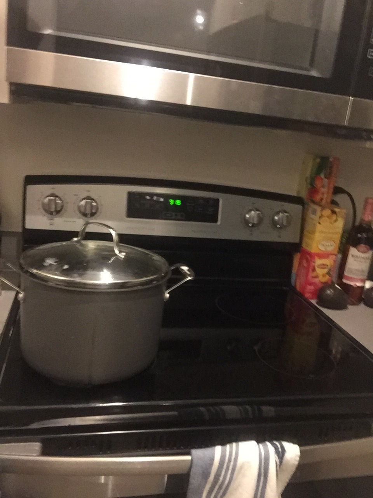
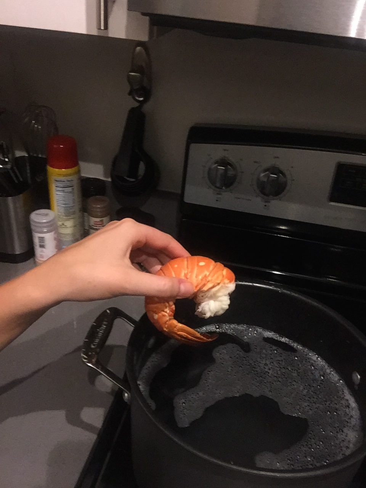
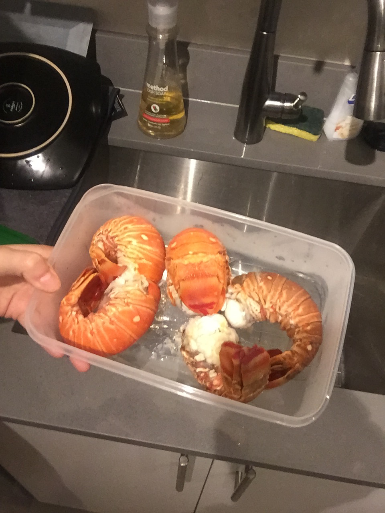
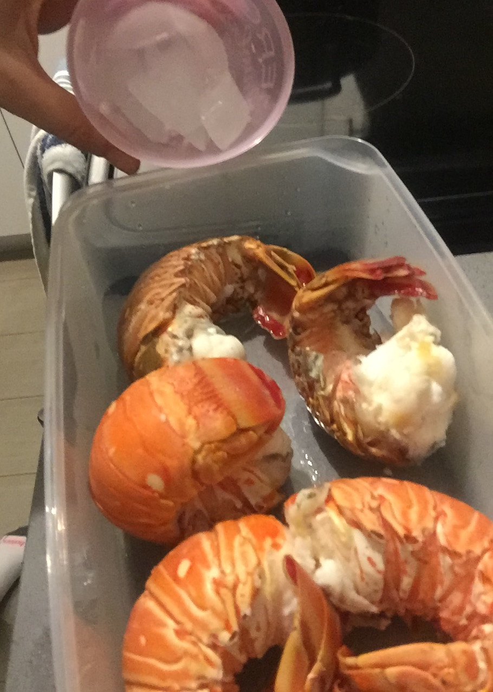

How to Prepare A Lobster Tail
Welcome to my step-by-step guide on how to prepare a Spiny Lobster tail!
Step 1:

Mouse over to see instructions
Step 2:

Mouse over to see instructions
Step 3:

Mouse over to see instructions
Step 4:

Mouse over to see instructions
Step 5:

Mouse over to see instructions
Step 6: